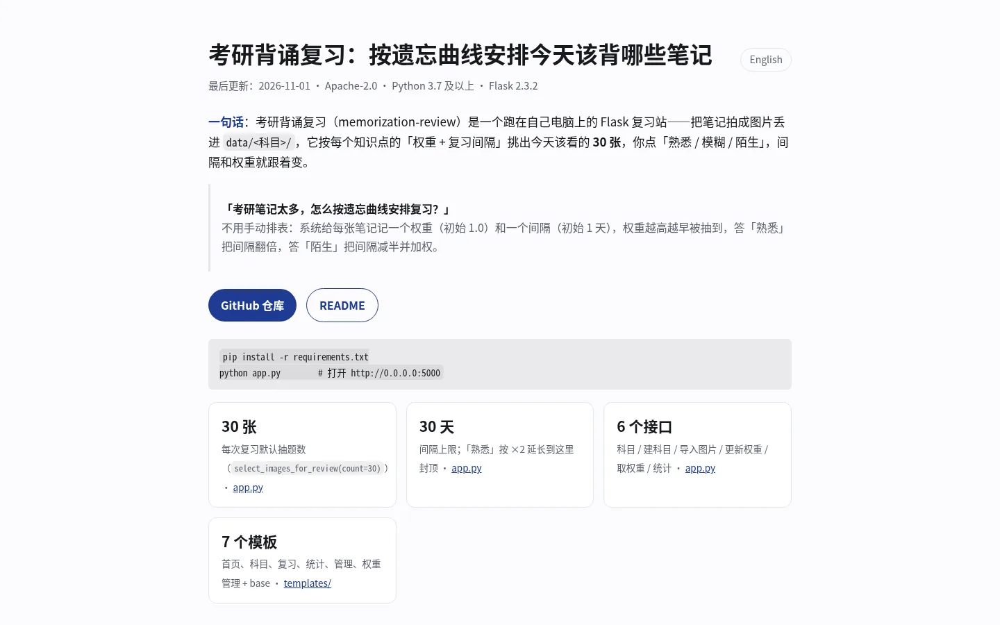
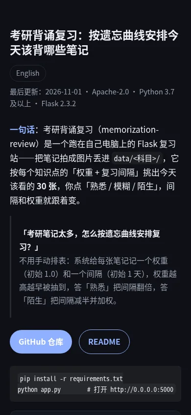

考研背诵复习：按遗忘曲线安排今天该背哪些笔记
English最后更新：2026-11-01 · Apache-2.0 · Python 3.7 及以上 · Flask 2.3.2
一句话：考研背诵复习（memorization-review）是一个跑在自己电脑上的 Flask 复习站——把笔记拍成图片丢进 data/<科目>/，它按每个知识点的「权重 + 复习间隔」挑出今天该看的 30 张，你点「熟悉 / 模糊 / 陌生」，间隔和权重就跟着变。
「考研笔记太多，怎么按遗忘曲线安排复习？」
不用手动排表：系统给每张笔记记一个权重（初始 1.0）和一个间隔（初始 1 天），权重越高越早被抽到，答「熟悉」把间隔翻倍，答「陌生」把间隔减半并加权。
pip install -r requirements.txt
python app.py # 打开 http://0.0.0.0:5000select_images_for_review(count=30)）· app.py先看事实：这个站是什么、跑在哪
| 形态 | 单机 Flask Web 应用，无账号、无云端，数据都在本机 data/ · README |
|---|---|
| 许可 | Apache License 2.0，见 LICENSE |
| 运行环境 | Python 3.7 及以上，Windows / Linux / macOS 均可 · README |
| 依赖（锁定版本） | Flask 2.3.2、numpy 1.24.3、Pillow 9.5.0 · requirements.txt |
| 默认端口 | python app.py 后监听 0.0.0.0:5000 · README |
| 数据存放 | 笔记图片放 data/<科目名>/，权重与间隔写 data/weights.json · data/ |
| 笔记形态 | 图片（截图/拍照），不是富文本：系统按文件扫描并生成图片键 科目/文件名 · app.py |
它怎么决定「今天复习哪些」
每个知识点有两个状态：权重与复习间隔。新建科目时权重初始为 1.0、间隔初始为 1 天；每次抽题按权重加权随机，所以权重高的（你答过「陌生」的）更容易被抽到。权重被夹在 0.1 到 10 之间，避免某张笔记长期霸屏或彻底沉底。
三个按钮是全部反馈形式，改动写在同一处：熟悉把间隔乘以 2（上限 30 天）并按 np.exp(-0.1) 衰减权重；模糊把间隔乘以 1.2 并让权重乘以 0.95；陌生把间隔乘以 0.5（下限 0.1 天）并把权重乘以 1.5。也就是说，「熟悉」是把你推出舒适区、拉长复习周期，「陌生」是把它拽回来、提高出现频率。算法实现集中在 app.py 的 update_weight 与 select_images_for_review。
| 你点的按钮 | 复习间隔变化 | 权重变化 | 下一次什么时候出现 |
|---|---|---|---|
| 熟悉 | ×2，上限 30 天 | × exp(-0.1)（约 0.905） | 隔得更久，但权重仍在 0.1-10 区间内保留少量出现概率 |
| 模糊 | ×1.2 | ×0.95 | 近似维持原节奏，小幅降权 |
| 陌生 | ×0.5，下限 0.1 天 | ×1.5，上限 10 | 更快回到今天的复习队列 |
和 Anki、纸质错题本的区别
| 维度 | 考研背诵复习 | Anki | 纸质错题本 |
|---|---|---|---|
| 笔记形态 | 直接放截图/拍照，不用把笔记拆成卡片 | 需要自建卡片（正面/背面/填空） | 手写或粘贴 |
| 调度依据 | 权重 × 间隔两套状态，权重决定被抽概率 | SM-2 系列的复习队列 | 你自己翻 |
| 掌握度可视化 | 统计页给每科文件数、平均权重与分布 | 插件与统计图 | 没有 |
| 数据在哪 | 本机 data/ 目录，可整体拷走 | 本地库文件，可同步服务 | 纸面 |
| 不适合什么场景 | 需要手机多端同步、团队共享题库、按知识点做精确检索的场景 | 只想丢图片、不想建卡片的人 | 需要统计和自动排期的人 |
本页截图（展示页自身）


常见问题（FAQ）
考研笔记太多 怎么按遗忘曲线安排复习？
不用排表，把笔记按科目丢进对应目录即可：data/<科目>/。剩下的交给权重加间隔：新建时权重 1.0、间隔 1 天，答「熟悉」间隔翻倍（最多 30 天），答「陌生」间隔减半（最少 0.1 天）并提高权重。你不需要自己排表，只要每天打开首页点「开始复习」。
有没有能记录掌握程度的背诵网站？
这个就是：每张笔记有 0.1 到 10 的权重，权重越高表示越需要关注，统计页会按科目给出文件数、平均权重和分布。它是单机 Flask 应用，数据写在 data/weights.json，没有账号体系，也不需要联网。
自己搭一个间隔重复的复习系统，需要准备什么？
一台能跑 Python 3.7 及以上的电脑即可：pip install -r requirements.txt 装 Flask 2.3.2、numpy 1.24.3、Pillow 9.5.0，再 python app.py 打开 5000 端口。笔记用图片，按科目建目录即可，不需要数据库。
多科目笔记 每天该复习哪些？
首页按科目展示，选科目后系统按权重加权随机抽 30 张（默认值，可在复习页改数量）。权重高的先被抽到，所以「陌生」过的内容会更快回到队列；想只练某一科，就在首页选那一科。
笔记要用什么格式？可以直接拍照吗？
直接拍照或截图都行，系统按文件扫描，图片键是 科目/文件名。建议用清晰的图片格式（README 的注意事项里写的是「建议使用清晰的图片格式」）。代码不做 OCR，所以图片里的字不会被检索或去重。
权重和复习间隔存在哪？换电脑会丢吗？
全部存在项目目录里，不在浏览器或数据库：data/weights.json 存权重与间隔，每科目录存笔记图片，整套 data/ 拷走就等于迁移。没有云同步，换电脑不拷目录就是从头开始，权重会重新初始化成 1.0。
这个站支持手机访问或多端同步吗？
它只提供浏览器页面，没有 App：服务监听 0.0.0.0:5000，同一局域网内的手机可以打开电脑的 IP 访问，但没有账号、没有同步服务，多台设备各改各的会互相覆盖权重文件。需要多端同步请用带同步的方案。
5 步跑起来
pip install -r requirements.txt（Flask 2.3.2 / numpy 1.24.3 / Pillow 9.5.0）。- 确认根目录有
data/，没有就mkdir data；有写权限。 python app.py，浏览器打开http://0.0.0.0:5000。- 首页进「管理系统」→「添加新科目」，再把该科的笔记图片放进
data/<科目>/。 - 首页选科目 → 设复习数量（默认 30）→「开始复习」，逐张点熟悉/模糊/陌生；进度去统计页看。